The Covers All the 1979 zines processed so far, most recently added at the top. Metadata here. Click for bigger. 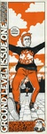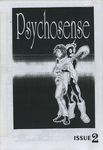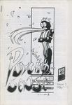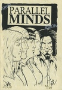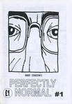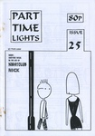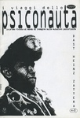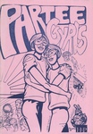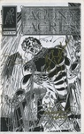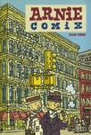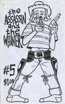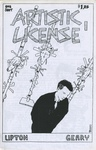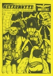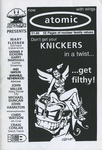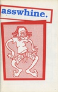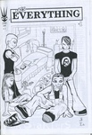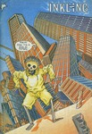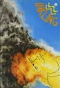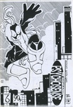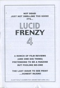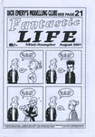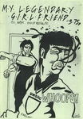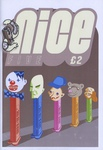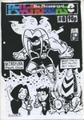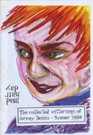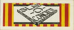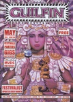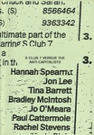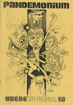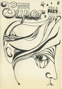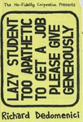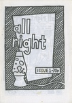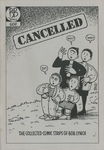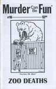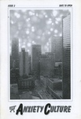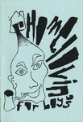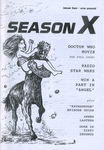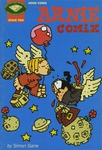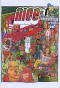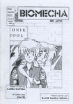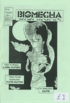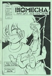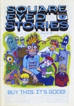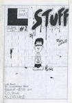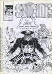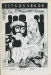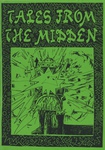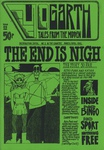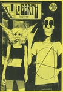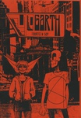 ends.


![Empty Life [Filthy Shit flip] 10 (Mike Tolento)](../images/thumbs/100171_t.jpg)


![The Lightning Room [Damage 1] (David Gordon)](../images/thumbs/100111_t.jpg)